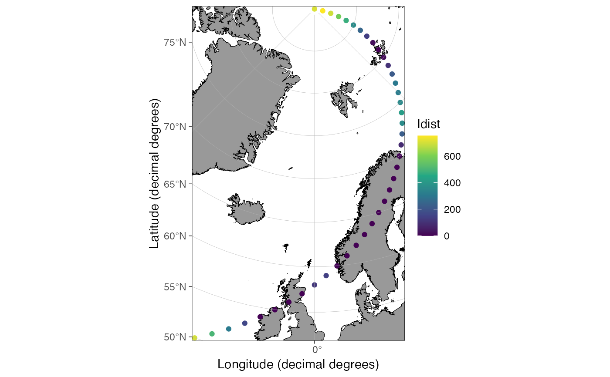

R/dist2land.R
dist2land.RdCalculates the closest distance to land for coordinates in a data frame
dist2land( data, lon = NULL, lat = NULL, shapefile = NULL, proj.in = "+init=epsg:4326", bind = TRUE, dist.col = "ldist", binary = FALSE, cores = getCores(), verbose = TRUE )
| data | Data.frame containing geographic coordinates |
|---|---|
| lon, lat | Either the names of the longitude and latitude columns in |
| shapefile | Land shape to which distances should be calculated. Either a character argument referring to a name of pre-made shapefiles in |
| proj.in |
|
| bind | Logical indicating whether |
| dist.col | The name of the distance column, if |
| binary | Logical indicating whether binary (TRUE = the position is in the ocean, FALSE = the position is on land) should be returned instead of distances. Speeds up the function considerably. |
| cores | Integer value defining how many cores should be used in the distance calculations. Parallelization speeds up the function (see |
| verbose | Logical indicating whether information about the process should be returned as messages. Set to |
Returns a vector if bind = FALSE, otherwise a data frame. The distances are given in a new column defined by the dist.col argument. The distances are kilometers if binary = FALSE, otherwise logical (TRUE = the position is in the ocean, FALSE = the position is on land).
The function calculates distances using projected coordinates and the rgeos::gDistance function. These distances do not consider the curvature of the Earth unless the projection of the used land shape does so (check out geosphere::dist2Line and this SO solution if you want exact distances). The function is fairly slow for large datasets. If you only want to use the function to remove (wrong) observations reported on land, set the binary argument to TRUE. This speeds up the calculations considerably.
The dist2land function offers parallel processing, which speeds up the calculations for large datasets. Parallel processing has not been tested under Windows yet and may not work.
Mikko Vihtakari
# \donttest{ # Simple example: dt <- data.frame(lon = seq(-20, 80, length.out = 41), lat = 50:90) dt <- dist2land(dt, cores = 1)#>#>#>#> | | | 0% | |== | 2% | |=== | 5% | |===== | 7% | |======= | 10% | |========= | 12% | |========== | 15% | |============ | 17% | |============== | 20% | |=============== | 22% | |================= | 24% | |=================== | 27% | |==================== | 29% | |====================== | 32% | |======================== | 34% | |========================== | 37% | |=========================== | 39% | |============================= | 41% | |=============================== | 44% | |================================ | 46% | |================================== | 49% | |==================================== | 51% | |====================================== | 54% | |======================================= | 56% | |========================================= | 59% | |=========================================== | 61% | |============================================ | 63% | |============================================== | 66% | |================================================ | 68% | |================================================== | 71% | |=================================================== | 73% | |===================================================== | 76% | |======================================================= | 78% | |======================================================== | 80% | |========================================================== | 83% | |============================================================ | 85% | |============================================================= | 88% | |=============================================================== | 90% | |================================================================= | 93% | |=================================================================== | 95% | |==================================================================== | 98% | |======================================================================| 100%#>#># No premade shapefiles for datasets covering the entire globe data.frame(lon = -20:20, lat = seq(-90, 90, length.out = 41))#> lon lat #> 1 -20 -90.0 #> 2 -19 -85.5 #> 3 -18 -81.0 #> 4 -17 -76.5 #> 5 -16 -72.0 #> 6 -15 -67.5 #> 7 -14 -63.0 #> 8 -13 -58.5 #> 9 -12 -54.0 #> 10 -11 -49.5 #> 11 -10 -45.0 #> 12 -9 -40.5 #> 13 -8 -36.0 #> 14 -7 -31.5 #> 15 -6 -27.0 #> 16 -5 -22.5 #> 17 -4 -18.0 #> 18 -3 -13.5 #> 19 -2 -9.0 #> 20 -1 -4.5 #> 21 0 0.0 #> 22 1 4.5 #> 23 2 9.0 #> 24 3 13.5 #> 25 4 18.0 #> 26 5 22.5 #> 27 6 27.0 #> 28 7 31.5 #> 29 8 36.0 #> 30 9 40.5 #> 31 10 45.0 #> 32 11 49.5 #> 33 12 54.0 #> 34 13 58.5 #> 35 14 63.0 #> 36 15 67.5 #> 37 16 72.0 #> 38 17 76.5 #> 39 18 81.0 #> 40 19 85.5 #> 41 20 90.0dist2land(dt, cores = 1) # wrong!#>#>#>#> | | | 0% | |== | 2% | |=== | 5% | |===== | 7% | |======= | 10% | |========= | 12% | |========== | 15% | |============ | 17% | |============== | 20% | |=============== | 22% | |================= | 24% | |=================== | 27% | |==================== | 29% | |====================== | 32% | |======================== | 34% | |========================== | 37% | |=========================== | 39% | |============================= | 41% | |=============================== | 44% | |================================ | 46% | |================================== | 49% | |==================================== | 51% | |====================================== | 54% | |======================================= | 56% | |========================================= | 59% | |=========================================== | 61% | |============================================ | 63% | |============================================== | 66% | |================================================ | 68% | |================================================== | 71% | |=================================================== | 73% | |===================================================== | 76% | |======================================================= | 78% | |======================================================== | 80% | |========================================================== | 83% | |============================================================ | 85% | |============================================================= | 88% | |=============================================================== | 90% | |================================================================= | 93% | |=================================================================== | 95% | |==================================================================== | 98% | |======================================================================| 100%#> lon lat ldist #> 1 -20.0 50 770.653793 #> 2 -17.5 51 547.038461 #> 3 -15.0 52 337.546117 #> 4 -12.5 53 174.874918 #> 5 -10.0 54 0.000000 #> 6 -7.5 55 0.000000 #> 7 -5.0 56 0.000000 #> 8 -2.5 57 0.000000 #> 9 0.0 58 123.247176 #> 10 2.5 59 145.587650 #> 11 5.0 60 5.751504 #> 12 7.5 61 0.000000 #> 13 10.0 62 0.000000 #> 14 12.5 63 0.000000 #> 15 15.0 64 0.000000 #> 16 17.5 65 0.000000 #> 17 20.0 66 0.000000 #> 18 22.5 67 0.000000 #> 19 25.0 68 0.000000 #> 20 27.5 69 0.000000 #> 21 30.0 70 8.824472 #> 22 32.5 71 83.978197 #> 23 35.0 72 225.411819 #> 24 37.5 73 361.077663 #> 25 40.0 74 416.021609 #> 26 42.5 75 356.138534 #> 27 45.0 76 310.787422 #> 28 47.5 77 298.118849 #> 29 50.0 78 212.189395 #> 30 52.5 79 102.691377 #> 31 55.0 80 17.593847 #> 32 57.5 81 0.000000 #> 33 60.0 82 19.565938 #> 34 62.5 83 133.132551 #> 35 65.0 84 245.801555 #> 36 67.5 85 356.787751 #> 37 70.0 86 466.059650 #> 38 72.5 87 573.612536 #> 39 75.0 88 679.448918 #> 40 77.5 89 736.611243 #> 41 80.0 90 692.354149# } if (FALSE) { dt <- data.frame(lon = seq(-179, 179, length.out = 1000), lat = rep(60, 1000)) # The distance calculation is slow for large datasets system.time(dist2land(dt)) #> user system elapsed #> 0.073 0.041 5.627 # The parallel processing speeds it up system.time(dist2land(dt, cores = 1)) #> user system elapsed #> 19.719 1.237 20.894 # binary = TRUE further speeds the function up system.time(dist2land(dt, binary = TRUE)) #> user system elapsed #> 1.624 0.041 1.680 }